1. 다음 토큰 예측
앞의 문맥으로 다음 말을 고릅니다
우리는 “비가 오니까 우산을…”이라는 말을 들으면 다음에 무엇이 나올지 자연스럽게 예상합니다. ChatGPT의 기본 작동 원리도 문맥에 이어질 표현을 예측하는 데서 출발합니다.
다만 단어 전체가 아니라 토큰(Token)이라고 하는 글자·단어 조각 단위로 예측합니다. 한 조각을 생성하면, 그 결과까지 포함한 문맥으로 다음 조각을 예측합니다.
직접 해 보기 1
“아침에 일어나서 칫솔로 이를 ____.”
실제 모델에서 측정한 값이 아닙니다. 문맥에 따라 후보 표현의 가능성이 달라질 수 있다는 점을 보여줍니다.
직접 해 보기 2
한 조각의 출력이 다음 문맥이 됩니다
‘다음 조각 보기’를 눌러 예문이 이어지는 모습을 확인하세요.
아직 생성된 조각이 없습니다.
정해진 예문을 보여주는 시연입니다. 실제 토큰 구분과 생성 과정을 단순화했으며, AI를 실행하는 기능은 아닙니다.
“이건 스마트폰 자동완성과 같은 것 아닌가?”라는 질문이 생길 수 있습니다. 출발 원리는 닮았지만, 어려운 문맥을 예측하는 데에는 더 복잡한 관계를 다루는 능력이 필요해질 수 있습니다.
2. 의미와 규칙
정확히 예측하려면 관계를 연결해야 합니다
쉬운 예측
“비가 오니까 우산을 ____.”
가져갔다.
여러 조건을 연결하는 예측
“민수는 사과 5개를 샀다. 2개를 먹고 친구에게 1개를 주었다. 지금 남은 사과는 ____.”
2개다.
두 번째 문제의 답을 맞히려면 사과의 개수, 먹는 행동, 친구에게 주는 행동, 수량의 변화를 연결해야 합니다. 익숙한 단어가 서로 붙는 방식만으로는 충분하지 않을 수 있습니다.
정확한 다음 표현을 예측한다는 목표는 의미·규칙·관계를 학습하도록 압력을 줄 수 있습니다. 다음 토큰 예측과 논리적 추론이 반드시 반대되는 개념은 아닌 이유입니다.
물론 이것만으로 모델이 모든 상황을 완전히 이해하거나 항상 정확하게 계산한다는 뜻은 아닙니다.
3. 학습과 파라미터
문서를 꺼내 읽기보다, 학습한 숫자로 계산합니다
사람이 많은 문장을 접하며 단어의 쓰임과 문법을 익히듯, AI도 방대한 데이터에서 패턴을 학습합니다. AI에서는 이 과정이 수학적인 계산으로 이루어집니다.
- 대규모 데이터많은 문장, 지식, 문제와 풀이를 학습합니다.
- 파라미터 조정예측 오류를 줄이도록 내부의 수많은 숫자를 조정합니다.
- 관계와 개념의 표현단어의 쓰임과 다양한 관계를 내부적으로 표현할 수 있게 됩니다.
이와 같은 기초 학습을 사전학습(Pre-training)이라고 합니다. 핵심은 문서들을 책장에 저장해 두었다가 답할 때마다 그대로 꺼내 읽는 방식과는 다르다는 점입니다. 예측에 유용한 패턴이 수많은 숫자로 이루어진 모델에 반영됩니다.
참고: OpenAI의 모델 학습 설명
4. 문맥과 어텐션
떨어져 있는 정보도 서로 연결합니다
현대 언어모델의 핵심 기반 중 하나는 2017년에 발표된 트랜스포머(Transformer)입니다. 여기서 중요한 계산 방식이 어텐션(Attention)입니다.
“영희가 수진에게 책을 건넸다.
그녀는 책을 받았다.”

사람은 문맥을 이용해 ‘그녀’가 누구를 뜻하는지 해석합니다. 모델도 문맥 속 여러 정보의 관련성을 계산하고 반영합니다. 가까운 단어만 보는 것이 아니라 멀리 떨어진 정보도 연결할 수 있습니다.
어텐션은 문법적인 주어만 찾는 장치가 아닙니다. 여러 토큰의 정보를 여러 층에서 처리하는 계산 방식입니다. 관련 정보를 반영한다고 해서 그 내용의 사실 여부까지 자동으로 보장하는 것도 아닙니다.
5. 논리적 추론
익힌 관계를 새로운 문제에 조합합니다
모델이 학습한 관계와 규칙을 새로운 문제에 적용할 수 있다면, 전에 본 문장과 똑같지 않은 문제에도 대응할 수 있습니다.
전제 1 · 모든 고양이는 동물이다.
전제 2 · 나비는 고양이다.
질문 · 나비는 동물인가?
나비 → 고양이 → 동물
결론: 그렇다.
이 답을 내려면 ‘나비는 동물이다’라는 문장 자체를 외울 필요는 없습니다. ‘모든 A는 B다’와 ‘C는 A다’를 연결해 ‘C는 B다’라는 결론을 도출할 수 있으면 됩니다.
이때 모델 내부의 여러 계산층은 정보를 변환하고 조합합니다. 복잡한 문제에서는 중간 단계를 활용해 앞에서 얻은 결과를 다음 판단에 반영할 수도 있습니다.
추론의 핵심은 말을 많이 출력하는 것이 아니라, 정보의 관계를 올바르게 적용하는 것입니다.
6. Thinking의 역할
추가 학습과 계산으로 해법을 더 검토합니다
기본적인 언어모델에 추론을 강화하는 학습을 더할 수 있습니다. OpenAI는 2024년 o1 연구에서 강화학습을 통해 문제를 작은 단계로 나누고, 실수를 수정하고, 다른 접근을 시도하도록 훈련했다고 설명했습니다.
빠른 답변의 개념도
질문 → 답변 생성
추론을 강화한 답변의 개념도
질문 → 문제 분해 → 추론·검토 → 필요하면 수정 → 답변 생성
차이를 이해하기 위한 설명용 도식입니다. 실제 모델이 항상 이 순서대로 작동한다는 뜻은 아니며, 내부 계산의 구성은 모델마다 다릅니다.
Thinking은 사람의 두뇌가 별도로 생기는 기능이 아닙니다. 다음 토큰을 생성하는 기본 구조를 활용하면서, 문제 해결에 추가적인 추론 계산을 사용할 수 있도록 훈련하는 방식으로 이해할 수 있습니다.
오래 추론했다고 반드시 정답을 얻는 것은 아닙니다. 최신 사실을 확인하는 일과 추론으로 관계를 검토하는 일도 구분해야 합니다.
7. 핵심 정리
자연스러운 말, 타당한 추론, 정확한 사실은 다릅니다
전체 흐름은 다음 토큰 예측 → 방대한 학습 → 문맥과 관계의 처리 → 새로운 문제에 적용 → 추가적인 추론과 검토로 연결할 수 있습니다.
| 구분 | 확인할 점 |
|---|---|
| 말을 잘 생성한다 | 문장이 자연스럽고 적절한가? |
| 추론을 잘한다 | 주어진 관계에서 타당한 결론을 도출했는가? |
| 사실이 정확하다 | 그 결론이 현실의 증거와 일치하는가? |
다음 말을 잘 예측하는 학습은 관계와 규칙을 다루는 능력으로 이어질 수 있습니다. 하지만 그럴듯한 답이 곧 검증된 답은 아닙니다.
학습 확인
핵심 원리를 내 말로 설명할 수 있나요?
다음 단어 예측이 추론 능력으로 이어질 수 있는 가장 중요한 이유는?
마지막으로, 화면을 보지 않고 다음 질문에 답해 보세요.
- 왜 ‘다음 단어 예측’과 ‘추론’은 반드시 반대되는 개념이 아닐까요?
- Thinking으로 답을 얻었어도 근거를 확인해야 하는 이유는 무엇일까요?
이 페이지의 출처와 편집 범위
공개 대화의 1강을 바탕으로 읽기 순서, 문단, 도표, 실습을 웹에 맞게 다시 편집했습니다. 원문 그대로의 전재본은 아닙니다. 두 선택형 문제는 원문에 근거하며, 피드백과 조각 생성 시연은 학습을 위해 새로 구현했습니다.
실제 언어모델을 실행하거나 숨겨진 내부 사고 과정을 보여주지는 않습니다. 실습 답은 화면 안에서만 처리하며 서버에 저장하거나 외부 AI로 보내지 않습니다.
1강 Markdown · 공개 대화 원문 · 편집 기록